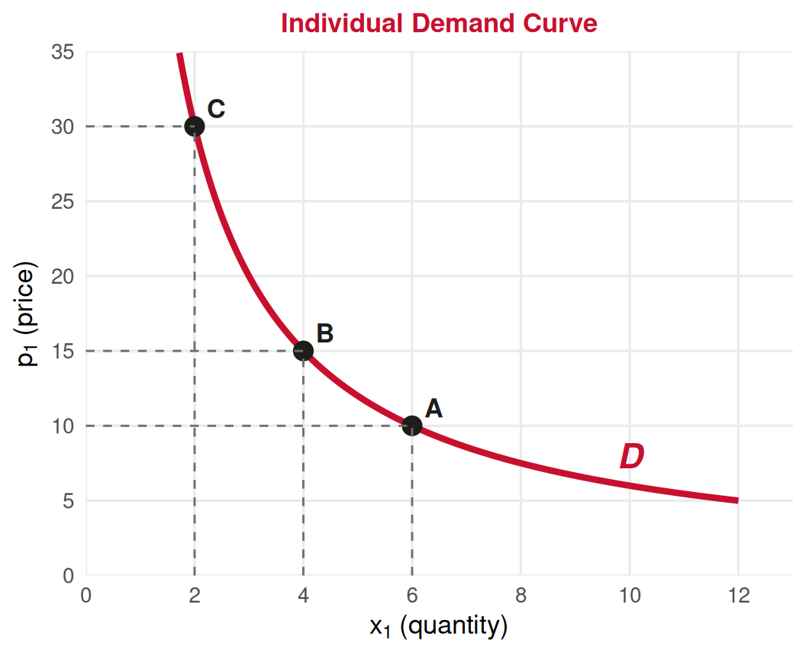
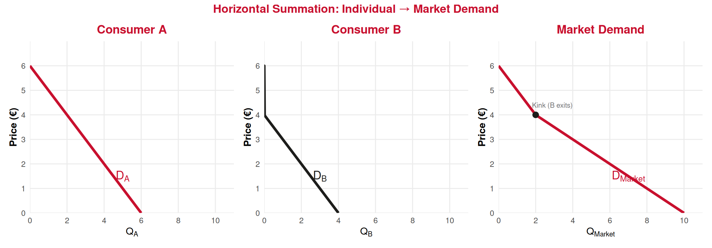
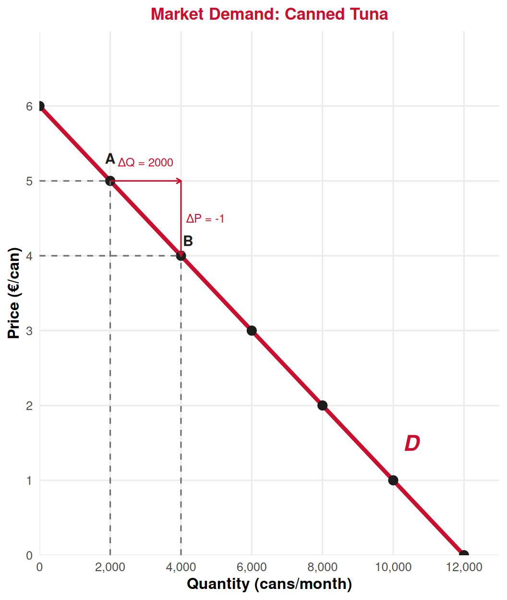
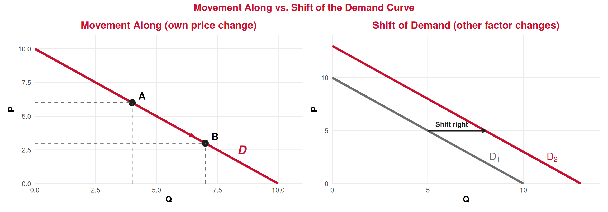
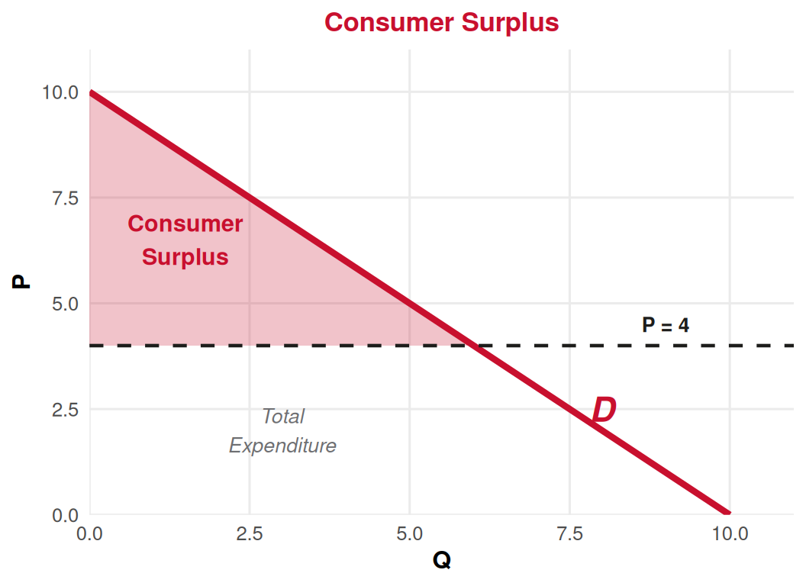

Consumer Theory
Lecture 8: Individual and Market Demand. Linear Demands.
Paulo Fagandini
2026
Recap: Lecture 7 ⏪
What we covered last time:
- Marginal Rate of Substitution (MRS): the rate at which a consumer trades \(x_2\) for \(x_1\) along an indifference curve
- Utility functions: assign numbers to bundles so that \(U(A) > U(B) \iff A \succ B\)
- Utility maximization: the optimal bundle is where the budget line is tangent to the highest indifference curve
\[MRS = \frac{MU_1}{MU_2} = \frac{p_1}{p_2}\]
Today: What happens to the optimal choice when \(p_1\) changes? 👉 This gives us the demand curve!
From Utility Maximization to Demand
The Key Idea 💡
From Optimization to Demand
When we change the price of good 1 (\(p_1\)) while holding income (\(M\)) and \(p_2\) fixed, the optimal quantity of \(x_1\) changes. Tracing these optimal quantities gives us the individual demand curve.
The experiment:
- Fix \(M\) and \(p_2\)
- Start with some price \(p_1\), find the optimal \(x_1^*\)
- Increase \(p_1\) ➡️ budget line pivots inward ➡️ new, lower \(x_1^*\)
- Decrease \(p_1\) ➡️ budget line pivots outward ➡️ new, higher \(x_1^*\)
- Plot all \((x_1^*, p_1)\) pairs ➡️ individual demand curve
Deriving Individual Demand: Graphically 📉
Upper panel (indifference curve diagram):
As \(p_1\) rises from 10 to 30, the budget line pivots inward (steeper).
The tangency points A, B, C trace the price-consumption curve.
The optimal quantity \(x_1^*\) falls: \(6 \to 4 \to 2\).
Below we plot just \((x_1^*, p_1)\) ⬇️
This is the individual demand curve!
The Individual Demand Curve 📉

Reading the demand curve:
Each point shows the optimal quantity at a given price.
- At \(p_1 = 10\): consumer buys \(x_1^* = 6\)
- At \(p_1 = 15\): consumer buys \(x_1^* = 4\)
- At \(p_1 = 30\): consumer buys \(x_1^* = 2\)
The Demand Curve
Shows the quantity a consumer is willing and able to buy at each price, ceteris paribus (holding everything else constant).
The Law of Demand 📜
Law of Demand
As the price of a good rises, the quantity demanded falls (and vice versa), ceteris paribus.
Why does it hold? Two effects when \(p_1\) rises:
💰 Income effect
Higher price makes the consumer effectively poorer ➡️ buys less of most goods
↔︎️ Substitution effect
Higher price makes good 1 relatively more expensive ➡️ consumer switches to good 2
💡 For normal goods, both effects work in the same direction ➡️ demand curves slope downward.
Reserve Price 🏷️
Reserve (Reservation) Price
The highest price a consumer is willing to pay for a good or service. Equivalently, it measures the benefit of obtaining the good.
Decision rule: Buy if \(\text{Price} \leq \text{Reserve Price}\)
Tourism example ✈️:
A tourist’s reserve price for a sunset boat tour in Lagos might be €45. If the tour costs €35, they buy it and enjoy a “surplus” of €10. If it costs €55, they skip it.
👉 The demand curve can be read as a curve of reserve prices — at each quantity, it tells us the maximum someone would pay for that unit.
From Individual to Market Demand
Horizontal Summation ➕
Market Demand
The market demand is obtained by horizontally summing all individual demand curves. At each price, we add up the quantities demanded by every consumer.
Example: Suppose there are only 2 consumers in the market.
| Price (€) | Consumer A (\(Q_A\)) | Consumer B (\(Q_B\)) | Market (\(Q_A + Q_B\)) |
|---|---|---|---|
| 0 | 6 | 4 | 10 |
| 1 | 5 | 3 | 8 |
| 2 | 4 | 2 | 6 |
| 3 | 3 | 1 | 4 |
| 4 | 2 | 0 | 2 |
| 5 | 1 | 0 | 1 |
| 6 | 0 | 0 | 0 |
👉 At each price, the market quantity is the sum of individual quantities.
Horizontal Summation: Graphically 📊
👉 Notice the kink at P = 4: above this price only Consumer A is in the market!
Why a Kink? 🤔
The market demand curve can have a kink when different consumers have different maximum willingness to pay (choke prices).
Below €4: Both A and B buy
\(Q_{Market} = Q_A + Q_B = 10 - 2P\)
Above €4: Only A buys (B’s demand is zero)
\(Q_{Market} = Q_A = 6 - P\)
In practice (large markets):
With thousands of consumers, individual kinks smooth out ➡️ market demand curves are typically smooth.
💡 For this course, we’ll usually work with linear market demand curves (no kinks) for simplicity.
Linear Demand Curves
The Linear Demand Equation 📏
Linear Demand — Inverse Form
\[P = b + mQ\]
where \(P\) is price, \(Q\) is quantity demanded, \(b\) is the vertical intercept (choke price), and \(m\) is the slope (\(m < 0\)).
Interpreting the parameters:
- \(b\) = the maximum price anyone would pay (quantity = 0). Also called the choke price.
- \(m\) = \(\frac{\Delta P}{\Delta Q}\) (negative!) — how much price falls per additional unit demanded
- The horizontal intercept = \(-b/m\) = the quantity demanded when price is zero
Example: Canned Tuna Market 🥫

The data (adapted from Lecture Notes available in Canvas):
\(b = 6\) (choke price = €6)
Slope: \(m = \frac{\Delta P}{\Delta Q} = \frac{-1}{2000}\)
Equation:
\[P = -\frac{1}{2000}Q + 6\]
Verify: At \(Q = 2000\):
\(P = -\frac{1}{2000}(2000) + 6 = 5\) ✅
At \(Q = 4000\):
\(P = -\frac{1}{2000}(4000) + 6 = 4\) ✅
Finding Quantity from Price
Often we want the direct demand form — quantity as a function of price.
Starting from the inverse demand: \(P = b + mQ\)
\[Q = \frac{P - b}{m}\]
Canned tuna example:
\[P = -\frac{1}{2000}Q + 6 \quad \Longrightarrow \quad Q = -2000P + 12000 = 12000 - 2000P\]
Verify: At \(P = 3\): \(Q = 12000 - 2000(3) = 6000\) cans/month ✅
👉 Both forms are equivalent — use whichever is more convenient for the problem!
Total Expenditure and Total Revenue 💸
Total Expenditure = Total Revenue
\[TE = TR = P \times Q\]
What consumers spend equals what sellers receive.
Example: If \(P = 3\) and \(Q = 6000\):
\[TE = TR = 3 \times 6000 = €18{,}000 \text{ per month}\]
Graphically, \(P \times Q\) is the area of the rectangle under the price line, from 0 to \(Q\).
👉 The relationship between price changes and total revenue depends on elasticity (Lecture 9!).
Movements Along vs. Shifts of Demand
Change in Quantity Demanded vs. Change in Demand ⚠️
This is one of the most important distinctions in economics!
↕️ Movement Along the Curve
A change in quantity demanded caused by a change in the good’s own price.
The curve itself does not move.
Example: Hotel room price drops from €100 to €80 ➡️ more rooms demanded.
↔︎️ Shift of the Curve
A change in demand caused by a change in anything other than own price.
The entire curve moves left or right.
Example: A viral TikTok video about Lisbon ➡️ demand for Lisbon hotels shifts right at every price.
Determinants of Demand (Shift Factors) ⚙️
Factors that shift the demand curve (right = increase, left = decrease):
➡️ Increase in demand:
- 📉 Price of complements falls (e.g. flights cheaper ➡️ more hotel demand)
- 📈 Price of substitutes rises (e.g. Airbnb raises fees ➡️ more hotel demand)
- 💰 Income rises (normal goods)
- ❤️ Preferences shift toward the good
- 👥 Population of buyers grows
⬅️ Decrease in demand:
- 📈 Price of complements rises
- 📉 Price of substitutes falls
- 📉 Income falls (normal goods)
- 💔 Preferences shift away
- 📉 Population of buyers shrinks
⚠️ A change in own price is a movement along the curve, never a shift!
Shifts vs. Movements: Graphically 📊
Consumer Surplus
Consumer Surplus ⭐
Consumer Surplus (CS)
The difference between what consumers are willing to pay (reserve price) and what they actually pay (market price). Graphically, it is the area below the demand curve and above the price line.

For a linear demand:
\[CS = \frac{1}{2} \times Q^* \times (b - P^*)\]
where \(b\) is the choke price.
Example: \(b = 10\), \(P^* = 4\), \(Q^* = 6\):
\[CS = \frac{1}{2}(6)(10 - 4) = €18\]
Why Consumer Surplus Matters 💡
Consumer surplus measures the net benefit consumers get from participating in the market.
Applications in tourism:
- 🎫 Dynamic pricing (airlines, hotels) aims to capture consumer surplus
- 🏛️ Government tourist taxes reduce consumer surplus
- 🎁 Promotional offers increase consumer surplus to attract visitors
Policy implications:
- CS helps measure the welfare effects of price changes, taxes, or subsidies
- A higher CS means consumers are better off
- We’ll use CS again when studying market equilibrium and market efficiency
Tourism Application
Tourism Demand in Practice ✈️
How does this theory apply to tourism?
Individual demand for travel:
Each tourist has a reservation price for a trip — shaped by income, preferences, time constraints.
📉 As flight prices rise, fewer tourists travel (law of demand).
💰 As income grows, tourists demand more and higher-quality travel (normal good).
Market demand for a destination:
The sum of all potential tourists’ for a given price.
Shifts when:
- 🌐 Exchange rates change (€ strengthens ➡️ more outbound tourism)
- 📱 Viral social media exposure
- ⚠️ Safety concerns or natural disasters
- ✈️ New direct flights to the destination
💡 The concepts of demand shifts and consumer surplus help tourism managers set optimal prices!
Summary 📋
Today’s Key Takeaways:
- Individual demand is derived from utility maximization as price changes
- The Law of Demand: higher price ➡️ lower quantity demanded (ceteris paribus)
- Market demand = horizontal sum of all individual demands
- Linear demand: \(P = b + mQ\) (inverse) or \(Q = \frac{P - b}{m}\) (direct)
- Movement along (own price change) vs. Shift (other factors change)
- Consumer surplus = area below demand, above price = net benefit to consumers
Connection to previous lectures: Budget constraints and preferences (L5–L7) generate demand curves (today).
Next (Lecture 9, March 12): Price Elasticity of Demand — how sensitive is quantity demanded to price changes?
⚠️ Reminder: Test 1 is on March 13 covering Fundamentals and Consumer!
Exercises
Application Time! ✏️
Individual demand, market demand, and linear demand curves.
Exercise 1: Multiple Choice
Question: If the price of Airbnb accommodation falls significantly, what happens to the demand curve for hotel rooms?
A. The demand curve for hotels shifts to the right
B. The demand curve for hotels shifts to the left
C. There is a movement along the hotel demand curve
D. The demand curve for hotels becomes steeper
Answer: B
Airbnb is a substitute for hotels. When the price of a substitute falls, demand for the good decreases (shifts left). Consumers switch from hotels to the now-cheaper Airbnb. This is a shift (not a movement along), because it’s a change in the price of another good.
Exercise 2: Multiple Choice
Question: The market demand for guided tours in Sintra is \(P = 50 - 2Q\) (€ per tour). At a price of €20, what is the consumer surplus?
A. €112.50
B. €500
C. €300
D. €225
Answer: D
At \(P = 20\): \(20 = 50 - 2Q \Rightarrow 2Q = 30 \Rightarrow Q = 15\) tours.
\[CS = \frac{1}{2} \times Q^* \times (b - P^*) = \frac{1}{2} \times 15 \times (50 - 20) = \frac{1}{2} \times 15 \times 30 = €225\]
👉 The triangle has base \(Q^* = 15\) and height \((b - P^*) = 30\).
Exercise 3: Open Question ✍️
Suppose the Algarve hotel market has two types of tourists:
- Domestic tourists (Portugal): Individual demand \(P = 200 - 4Q_D\)
- International tourists: Individual demand \(P = 300 - 2Q_I\)
There are 100 domestic tourists and 50 international tourists. Assume all tourists of the same type are identical.
a) Write the market demand for each group of tourists.
b) Derive the total market demand curve for the Algarve hotel market.
c) At a price of €100 per night, how many rooms are demanded by each group? What is total market demand?
d) Calculate the consumer surplus for each group at \(P = €100\).
e) A new low-cost airline begins flights to Faro, reducing travel costs for international tourists. How would this affect the total market demand curve? Explain whether this is a movement along or a shift of demand.
Exercise 3: Solution — Parts a & b
a) Market demand for each group:
Domestic (100 identical tourists): \(Q_D^{total} = 100 \times Q_D = 100 \times \frac{200 - P}{4} = \frac{100(200 - P)}{4} = 5000 - 25P\) for \(P \leq 200\)
International (50 identical tourists): \(Q_I^{total} = 50 \times Q_I = 50 \times \frac{300 - P}{2} = \frac{50(300 - P)}{2} = 7500 - 25P\) for \(P \leq 300\)
b) Total market demand (horizontal sum):
For \(P \leq 200\) (both groups buy): \(Q_{Total} = (5000 - 25P) + (7500 - 25P) = 12500 - 50P\)
For \(200 < P \leq 300\) (only international): \(Q_{Total} = 7500 - 25P\)
For \(P > 300\): \(Q_{Total} = 0\)
Exercise 3: Solution — Parts c & d
c) At P = €100 (both groups are active since \(100 < 200\)):
\(Q_D^{total} = 5000 - 25(100) = 2500\) rooms
\(Q_I^{total} = 7500 - 25(100) = 5000\) rooms
\(Q_{Total} = 2500 + 5000 = 7500\) rooms ✅ (matches \(12500 - 50(100) = 7500\))
d) Consumer surplus at P = €100:
Domestic: Inverse demand: \(P = 200 - \frac{Q_D^{total}}{25}\). Choke price = 200. \(Q^* = 2500\).
\[CS_D = \frac{1}{2} \times 2500 \times (200 - 100) = \frac{1}{2} \times 2500 \times 100 = €125{,}000\]
International: Inverse demand: \(P = 300 - \frac{Q_I^{total}}{25}\). Choke price = 300. \(Q^* = 5000\).
\[CS_I = \frac{1}{2} \times 5000 \times (300 - 100) = \frac{1}{2} \times 5000 \times 200 = €500{,}000\]
Total CS = €125,000 + €500,000 = €625,000
Exercise 3: Solution — Part e
e) New low-cost airline to Faro:
This reduces the total cost of visiting the Algarve for international tourists (complementary good: transport + accommodation).
Effect: The demand curve for international tourists shifts to the right. At every price, international tourists now demand more hotel rooms.
This is a shift of the demand curve, not a movement along it, because the change is caused by a factor other than the hotel’s own price (namely, a fall in the price of a complementary good — flights).
On the graph: The total market demand curve shifts right. The segment for \(200 < P \leq 300\) shifts right (international demand increases), and the segment for \(P \leq 200\) also shifts right (the international component is now larger at every price).
The domestic demand curve is unaffected (they don’t fly to Faro from within Portugal).
Next Lecture
March 12, 2026: Calculation and Determinants of Demand Elasticity
How sensitive is quantity demanded to price changes?
⚠️ Test 1: March 13, 2026 — Fundamentals (Lectures 1–4) and Consumer (Lectures 5–8)
Thank You!
Questions? 🙋
📧 paulo.fagandini@ext.universidadeeuropeia.pt
Next class: Thursday, March 12, 2026

Economics of Tourism | Lecture 8